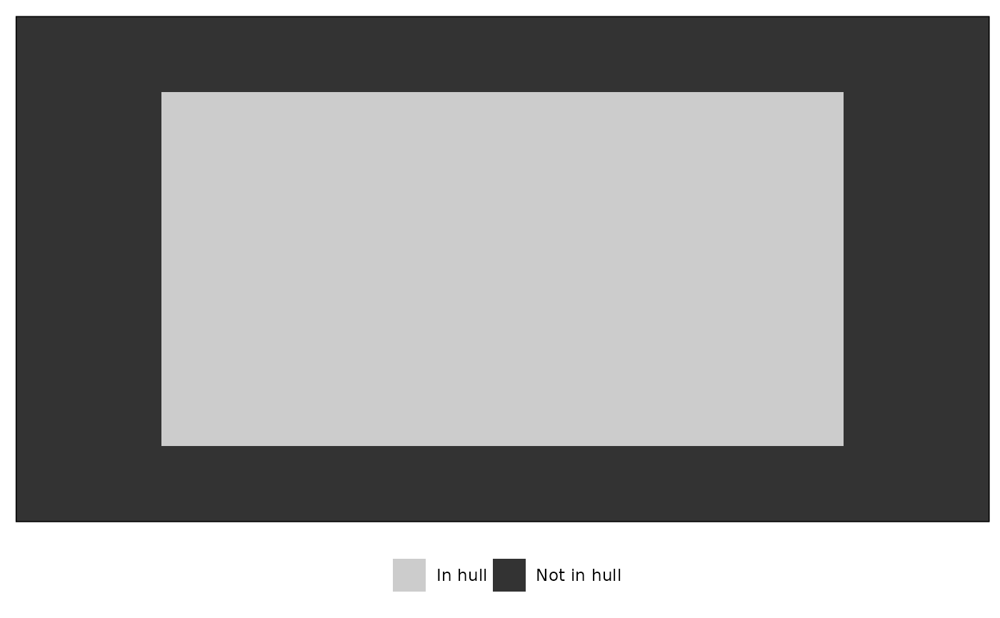

Create a full grid from a set of coordinates
resample_grid.Rdresample_grid() creates a rectangular grid around supplied coordinates by resampling evenly spaced points between the minimum and maximum values of each coordinate dimension. The grid can optionally be reduced to a convex or concave hull around the supplied coordinates.
Arguments
- coords2D
a 2-column matrix data frame of coordinates with the x-coordinates in the first column and the y-coordinates in the second column. The ranges of each column will be used to create the resampled grid.
- resample
the number of points (or pixels) in the x and y dimensions over which to create the grid. Default is 100 for a kriged surface of 100x100=10,000 pixels.
- padding
a number representing how much to expand the grid beyond the ranges of the x- and y-coordinates. For example,
padding = 1.2(the default) expands the grid by 20% of the coordinates' ranges in each direction. Must be a number greater than or equal to 1. Large numbers imply greater extrapolation, and whatever padding is added will be negated ifhullis specified.- hull
method to restrict the grid to an alpha hull using
alphahull]orconcavemanpackages. Default is `NULL` and no hull will be calculated.- alpha
when
hull != NULL, the alpha value used to create the hull. Passed toahullorconcaveman.- plot
Logical. When
hullis specified, whether to plot the resulting hull overlayed over the original grid. Default isTRUE.
Value
A data frame with two columns, x and y, containing the resampled coordinate grid. When hull is specified, any points not in the hull will be absent.
See also
krige_surf, which uses resample_grid for kriging.
ahull and inahull, or concaveman for creating the hull.
Examples
data("warps")
warps_fnc <- as_fnc_df(warps)
# hull with plot to see the hull
grid <- resample_grid(warps_fnc[c("x", "y")],
hull = "concaveman", plot = TRUE)

str(grid)
#> 'data.frame': 4900 obs. of 2 variables:
#> $ x: num -0.186 -0.182 -0.178 -0.174 -0.17 ...
#> $ y: num -0.0499 -0.0499 -0.0499 -0.0499 -0.0499 ...
#> - attr(*, "hull")= chr "concaveman"
#> - attr(*, "alpha")= num 1
if (FALSE) { # \dontrun{
# Alpha hull with plot to see the hull
grid <- resample_grid(warps_fnc[c("x", "y")],
hull = "alphahull", plot = TRUE)
} # }